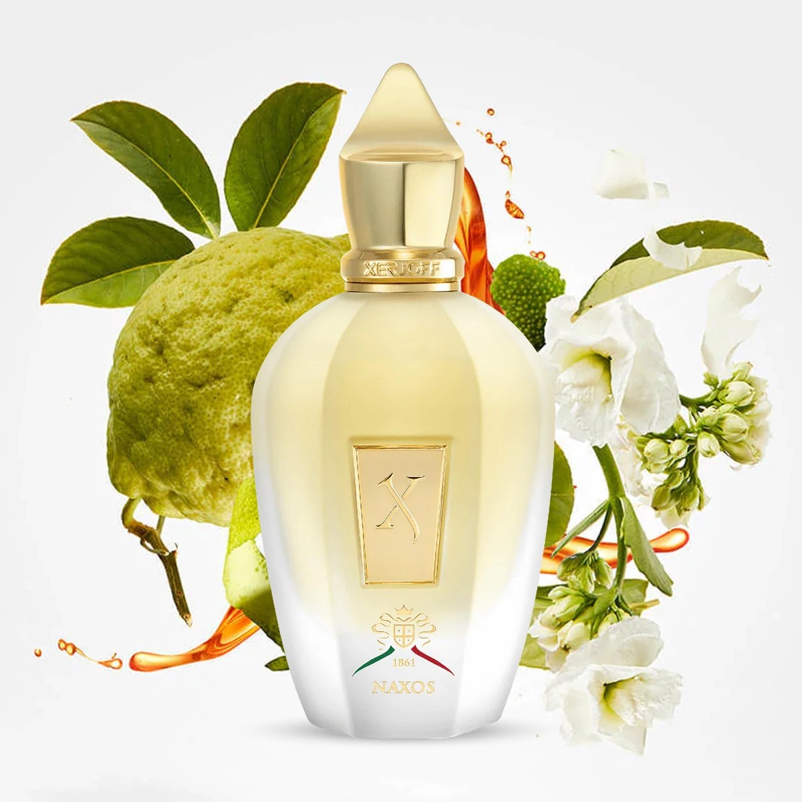
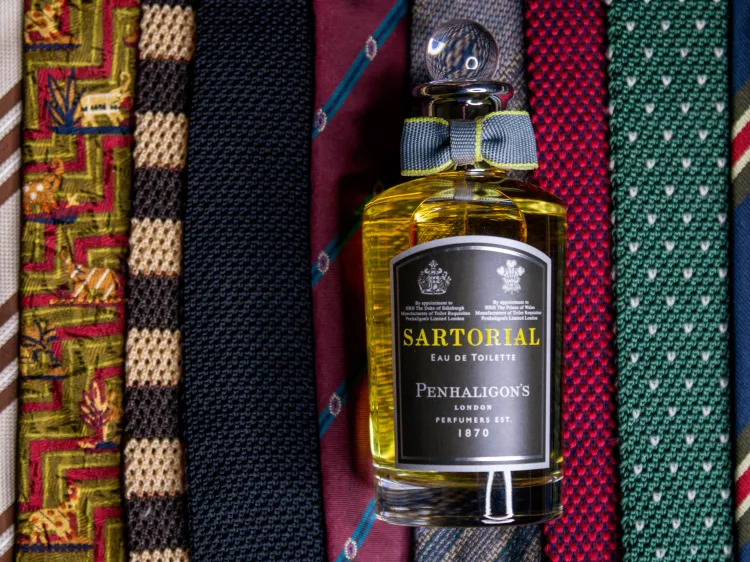
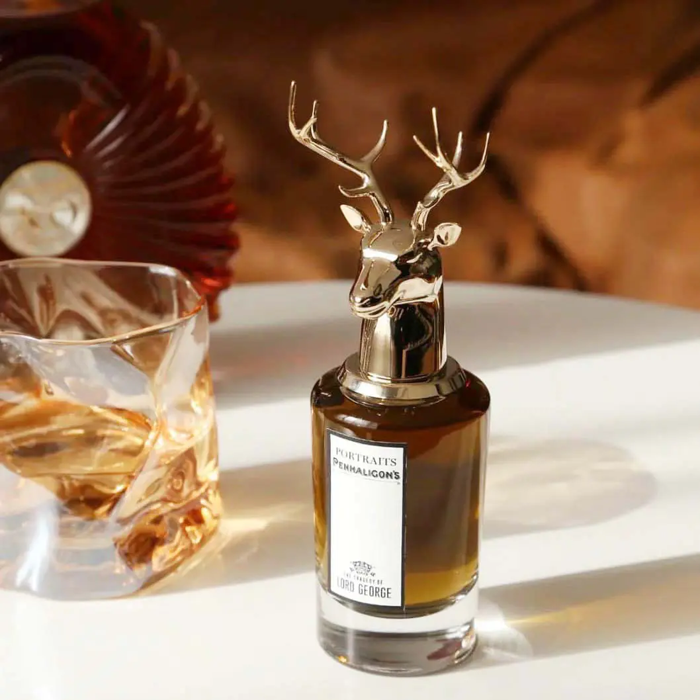
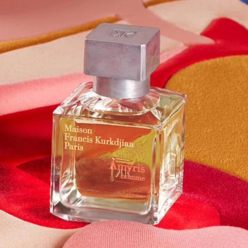
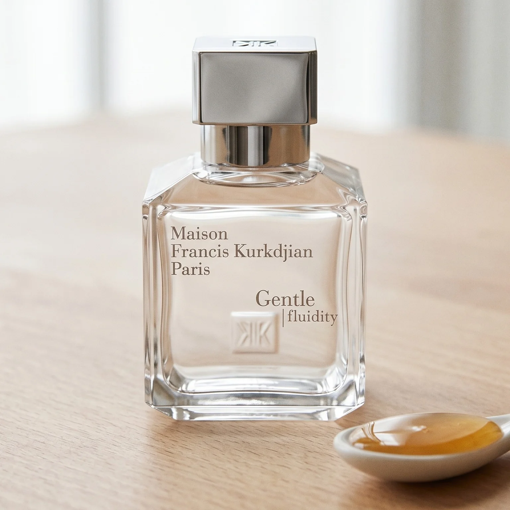
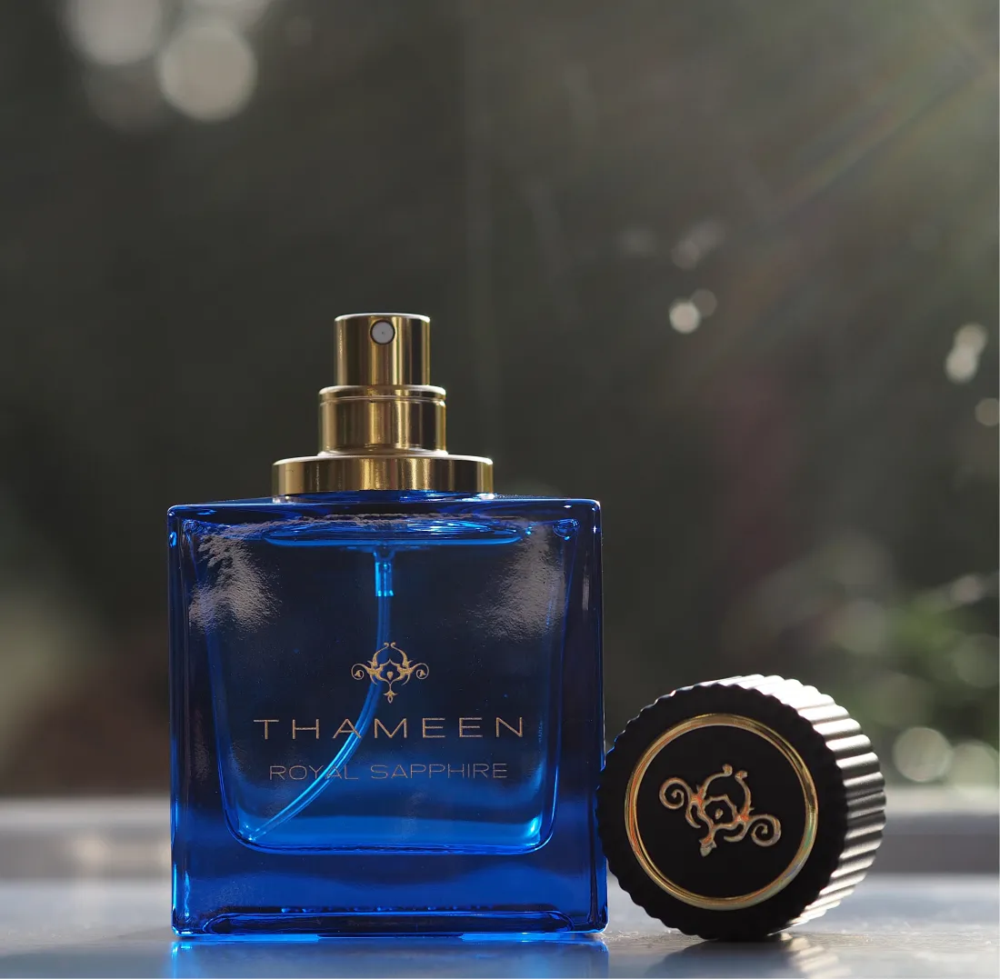
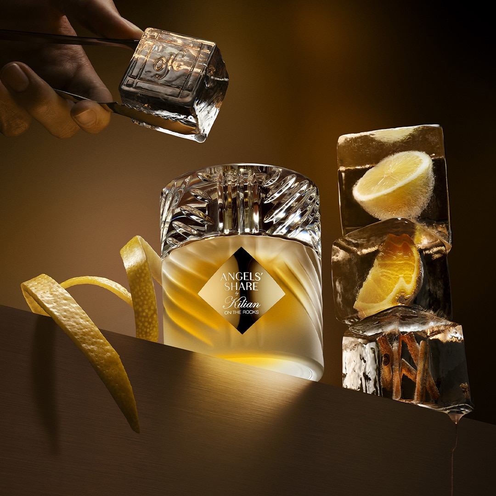

Xerjoff - Naxos
Naxos de Xerjoff es una fragancia elegante que combina miel, tabaco, vainilla y lavanda, con un aroma cálido, dulce y sofisticado.

Naxos de Xerjoff es una fragancia elegante que combina miel, tabaco, vainilla y lavanda, con un aroma cálido, dulce y sofisticado.

Una fragancia fresca y vibrante con notas de menta, limón, albahaca y almizcle, inspirada en la energía del tenis.

Sartorial es una fragancia elegante y sofisticada con notas de lavanda, miel, cuero y maderas, inspirada en la tradición de la sastrería británica.

Una fragancia elegante y masculina con notas de brandy, ámbar, haba tonka y madera, inspirada en la imagen de un caballero británico clásico.

Una fragancia elegante y luminosa con notas de amyris, mandarina, romero y maderas, combinando frescura y sofisticación.

Una fragancia fresca y elegante con notas de enebro, nuez moscada, cilantro y almizcles, con un aroma limpio, sofisticado y moderno.

Una fragancia elegante y envolvente con notas de higo, té negro, cardamomo, iris y sándalo, con un carácter cálido, cremoso y sofisticado.

Una fragancia lujosa y sofisticada con notas frescas, florales y amaderadas, inspirada en la elegancia de una joya preciosa.

Una fragancia unisex sofisticada que combina la calidez del cognac y las especias con un toque fresco y vibrante de cítricos. Inspirada en un cóctel de lujo servido con hielo, ofrece una experiencia elegante, envolvente y moderna..